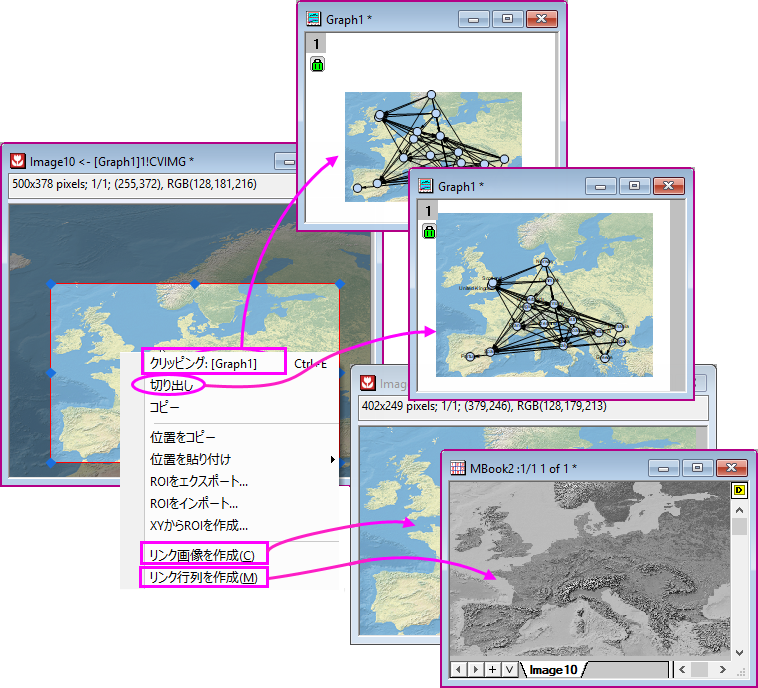

はじめに
Intro-Image-Processing
イメージウィンドウ
バージョン2021bより、Originは画像をロードおよび保存するための新しい画像ウィンドウを導入しました。処理および解析ルーチンにOpenCVを採用しています。新しい画像ウィンドウは、以下のような単一レイヤのウィンドウです。上部に情報バーがあり（表示されない場合は、表示：情報を表示を選択して表示できます）、動画またはマルチフレーム画像の場合は、下部にナビゲーションバー（表示：ナビゲーション表示を選択して表示します）があります。これはほとんどすべての画像処理の性能に影響します。
| シングルフレーム画像
|
マルチフレーム画像または動画
|
|
|
|
/Tip_icon.png) |
- Origin 2021b以前のバージョンでは、画像は行列ウィンドウに保存され、LeadToolsによって処理されます。一方、新しい画像ウィンドウは、処理および分析ルーチンにOpenCVが採用されています。
- 行列ウィンドウは、複数レイヤウィンドウなので多くのシートを含むことができます。しかし、画像ウィンドウは1つのシートに限られます。
- 行列ウィンドウは、ほとんどすべての組み込みの画像処理ツールに関わります。また、2D FFTなどの処理や分析で結果データを出力する場合は、行列ウィンドウが使用されます。一方、イメージウィンドウは、ほとんどの画像/動画処理アプリで使用されています。
- いつでもイメージウィンドウを行列に変換および元に戻すことができます。以下をご覧ください。
|
画像や動画をインポートする
詳細は、このページを参照して下さい。
- 編集：切り取り：アクティブなイメージウィンドウをクリアします。
- 編集：削除：ROIが選択されている場合、このメニューはROIを削除します。イメージウィンドウが選択されている場合、このメニューはウィンドウをクリアします。
- 編集：コピー：ROIが選択されている場合、このメニューはROIをコピーします。イメージウィンドウが選択されている場合、このメニューは画像をコピーします。そして、それをオブジェクトとしてグラフウィンドウまたはイメージウィンドウに貼り付けることができます。
- 編集：貼り付け：コピーされたROIや画像を貼り付けます。
- 表示：情報：情報バーの表示/非表示
- 表示：ナビゲーション：ナビゲーションバーの表示/非表示
画像や動画をエクスポートする
詳細は、このページを参照して下さい。
イメージウィンドウでの基本操作
画像メインメニューのツールに加えて、基本的な操作にすばやくアクセスするためのツールバーボタンとコンテキストメニューが用意されています。
ミニツールバー
- イメージレイヤのどこかの場所でクリックすると、ミニツールバーが表示されます。
- シングルフレーム画像
- 動画
- マルチフレームスタック画像
/Minitoolbar_image_window3.png)
グレースケール画像へのパレットの適用
イメージウィンドウのグレースケール画像に、カラーパレットを適用できます。
- 必要に応じて、ミニツールバーのグレーボタン
/Popup_Gray.png) をクリックして、画像をグレースケールに変換します。
をクリックして、画像をグレースケールに変換します。
- カラーパレットをグレースケールの画像に適用するには、スタイルツールバーのパレットボタン
/Button_Palette.png) をクリックします。
をクリックします。
- ミニツールバーのパレット反転ボタン
/Popup_Revise_Palette.png) をクリックして、適用されたパレットを反転できます。
をクリックして、適用されたパレットを反転できます。
| スタイルツールバーのパレットリストで、さらに他のパレットをクリックしてカラーマネージャを開くと、他のパレットを追加できます。
|
コンテキストメニュー
| ROIを追加
|
ROIで何ができるかについては、以下をご覧ください。
|
| ROIをインポート...
|
以前に保存したROIの設定を適用してROIを作成します。ROIの設定を保存する方法については関心領域の章をご覧ください。
|
| XYからROIを作成...
|
XY座標（境界）とインデックスデータのセットから、任意の形状のROIボックスを作成します。詳しくは関心領域の章を参照してください。
|
実際のサイズを表示/
ウィンドウに合わせる
|
- 画像を1：1ピクセルモードでウィンドウの中央に表示します、または
- 画像を常にウィンドウサイズに合わせます。
|
| リンクファイル
|
ここをチェックすると、画像をソースファイルにリンクします。こちらでファイルリンクの有無の違いを確認してください。
Note: ステータスバーで画像がリンクされているかどうか確認できます。
|
| ソースファイルパス
|
ダイアログを開き、画像ファイルのソースを変更します。画像のパスの保存と変更についての詳細はこちらを参照してください。
|
背景色を変更
- 画像の背景色を変更する場合にはツールバーにある塗り色ボタン
/Button_Fill_Color.png) を使用
を使用
- 画像の背景色を変更するためにLabtalkスクリプトpage.basecolor=を使用LabtalkのPage オブジェクトを参照してください。
page.basecolor= 3; // 画像の背景色を緑に変更
関心領域（ROI）
ROIボックスを追加するには
- ミニツールバーからROIを追加ボタンをクリックします。（ROIボックスの形は<前回どおり>になります）
- または、
- プロット操作・オブジェクト作成ツールバー内、四角形ツール ボタン
/Rectangle_Tool_Button.png) の隣にある▼をクリックし、 サブリストからいずれかの形 (四角形、円、 多角形、 自由閉曲線) を選択します。画像上で領域をドラッグします。
の隣にある▼をクリックし、 サブリストからいずれかの形 (四角形、円、 多角形、 自由閉曲線) を選択します。画像上で領域をドラッグします。
- または、
- イメージウィンドウ内で右クリックしROI追加コンテクストメニューを選択します。（ROIボックスの形は<前回どおり>のものになります。）
単一のイメージウィンドウに複数のROIボックスを追加する場合
- 画像にROIボックスを追加したのち、
- ミニツールバーにあるROIを追加ボタンをクリックする、または
- 右クリックしてコンテクストメニューのROI追加を選択する
- ことでもう1つROIボックスを追加できます。
- または、
- 画像にROIボックスを追加したあと、ROIをダブルクリックしてROI位置ダイアログボックスを開きます。"ROI1"のような名前に変更します。
- 先に述べた3つのうちいずれかの方法で新しいROIボックスを追加します。
- ROIをダブルクリックして、
- ROIの名前を変更できます
- 左上と右下のアンカーポイントのXY座標を指定して、ROIを再配置します。
- ROIを右クリックして、
- 
- 切り出し：画像をグラフから開いたときに使用できます（グラフ画像をダブルクリックするなど）。これにより、グラフ画像がイメージウィンドウのROIに切り出されます。元のグラフ画像のサイズは、切り出された領域のサイズに縮小されます。グラフウィンドウで画像全体を復元するには、ROIの外側を右クリックして、クリッピングを削除を選択します。
- 切り取り：イメージウィンドウ画像とグラフ画像（存在する場合）をROIにトリミングします。グラフ画像のサイズと位置は保持されます。
- コピー：ROIを画像としてコピーできます。Origin内の他のウィンドウに貼り付けることができます。 （例：グラフまたはワークシートウィンドウ、または他のアプリケーションへ）マルチフレーム画像の場合、アクティブなフレームのみがコピーされます。
- スケールをグラフに適用する：イメージウィンドウからの画像でグラフにイメージが挿入されているときに利用できます。これにより、グラフ画像がイメージウィンドウ ROIに更新されます。
- 位置をコピー：ROIボックス座標の4つの頂点をコピーします。プレーンな数値として貼り付けるか、別のROIボックスに位置を貼り付けるかを選択できます。後のオプションでは、ROIの幅/高さ、または水平/垂直位置のみを貼り付けを選択できます。
- ROIをエクスポート：詳細（ROI名、頂点の位置など）を.ROIファイルに保存します。
- ROIをインポート：以前に保存したROIの詳細を、選択したROIに適用します。
- XYからROIを作成: XY座標（境界）とインデックスデータのセットから、任意の形状の新しいROIボックスを作成します。NetCDFデータのXYからROIを作成するもご覧ください。
- リンク画像を作成：ROIを新しいイメージウィンドウに出力します。ROIを移動したり、ROIボックスのサイズや形状を調整したりすると、それに応じて新しいウィンドウが更新されます。
- リンク行列を作成：ROIを新しい行列ウィンドウに出力します。行列はイメージウィンドウROIに従って更新されます。
- 強度プロファイル：ROIに対して強度プロファイルを実行し、記述統計の値をワークシートに出力します。詳細は以下のセクションを参照してください。
| イメージウィンドウROIの外側の、画像の暗さの度合いは、システム変数@IMGDIによって制御されます。@IMGDI = 1000に設定すると、外側の領域が黒く表示されます。 @IMGDI = 0にすると、暗くされません。システム変数の値を変更する方法については、このFAQを参照してください。
|
ROIの強度プロファイル
ROIボックスを右クリックして、コンテクストメニューから強度プロファイルを選択します。
cvroiprofileダイアログが開きます。
- 単一のROI (アクティブROI) または複数のROI (イメージ上のすべてのROI) でプロファイルを取得することを選択できます。イメージウィンドウに複数のフレームが含まれている場合、すべてのフレームの結果が出力されます。
- 統計ブランチで出力する記述統計値を選択します: 平均、SD（標準偏差）、最小、最大、中央値、合計、最小のXY、最大のXY。
- 重み付けROIチェックボックスが選択されている場合、ROI 境界上またはその近くのピクセル（ROIは1つのピクセルを完全にカバーすることはできません）は、ROI内の領域のパーセンテージによって重み付けされます。ROIが小さい場合、このチェックボックスは役に立ちません。その場合、エッジピクセルがROI全体に大きな影響を与えます。
詳細については、X-ファンクション cvroiprofile を参照してください。
画像からグラフを作成
画像を背景としてプロットする
- メニューのイメージ：背景として画像をプロットを選択します。
- 新しいグラフウィンドウが作成され、現在の画像が背景として設定されます。
- 作成されたグラフウィンドウは自動で、レイヤレベルの作図の詳細ダイアログのレイヤの大きさタブにある軸の長さをリンクするX：Yの比率が1に設定され、等尺の表示になります。
- グラフページはレイヤサイズに合うように自動で再スケールされます。
- 画像のXY座標が変更された場合 (たとえば、別の画像のROIボックスから作成されたリンク画像でROI が再配置された場合など)、それに応じてグラフが再スケーリングされます。この機能をオフにするには、レイヤレベルのミニツールバーの背景画像を自動再スケールボタン
/Popup_Auto_Rescale_Background_Image.png) をクリックします。
をクリックします。
| グラフへの画像の挿入についての詳細は、このページを参照してください。
|
作図メニュー
- さらに、イメージウィンドウは作図メニューから以下のグラフタイプを利用できます。
マルチフレームのイメージウィンドウから、
ヒストグラム, カラーマップ等高線図, グレースケール等高線図, ヒートマップ, 等高線プロファイル, イメージプロファイル
のグラフタイプをプロットすると、ブラウザグラフが作成されます。
- ページレベルのミニツールバーからブラウザグラフの列入れ替えボタン
/Popup_Graph_Browser.png) をクリックして、ナビゲーションパネルを開くことができます。
をクリックして、ナビゲーションパネルを開くことができます。
- コンテキストメニューのめくるを選択し、指定したステップごとにフレームをめくって表示します。
- 詳細については、各グラフタイプのハイパーリンクをクリックしてください。
編集したグラフをテンプレートとして保存すると、作図：ユーザテンプレートメニューからグラフをプロットできます。
調整と変換
上述のボタンとメニューに加えて、Originは画像処理と解析に役立つツールのセットを提供します。次のようにサブカテゴリがあります：
行列への変換と復帰
データセットの表示と保存のさまざまな方法として、イメージウィンドウと行列ウィンドウの間で変換する必要がある場合があります。変換中にデータタイプを指定できます。これは、後処理でデータタイプが必要な場合に考慮に入れる必要があります。
- メニューから、イメージ：行列に変換を選択して、Cv2Matダイアログを開きます。
次のデータタイプがサポートされています。
| 自動
|
これはデフォルトオプションです。画像タイプを取得し、画像フレームごとに常に1つの行列オブジェクトを生成します。8ビットのグレースケール画像はByte行列に変換され、RGBカラー画像はUIntマトリックスに変換されます。
Alphaチャネルを処理せず、必要に応じて前処理ができます。
|
| Byte
|
Byte行列：0から255までの値
|
| UShort
|
Unsigned short行列：0から65535までの値
|
| UInt
|
Unsigned Int行列 (符号なし整数型)：0から4294967295までの値
|
| Float
|
32bit Float行列：-3.4X1038～3.4X1038の値
|
| Double
|
64bit Float行列：-1.7X10308～1.7X10308の値
|
- Pythonでこれを行うことができます。以下はサンプルです。
import originpro as op
import numpy as np
ml = op.find_sheet('m')
a = ml.to_np3d()
iw=op.new_image()
iw.setup(1,True)
iw.from_np(a)
iw.set_int('NAV',1)